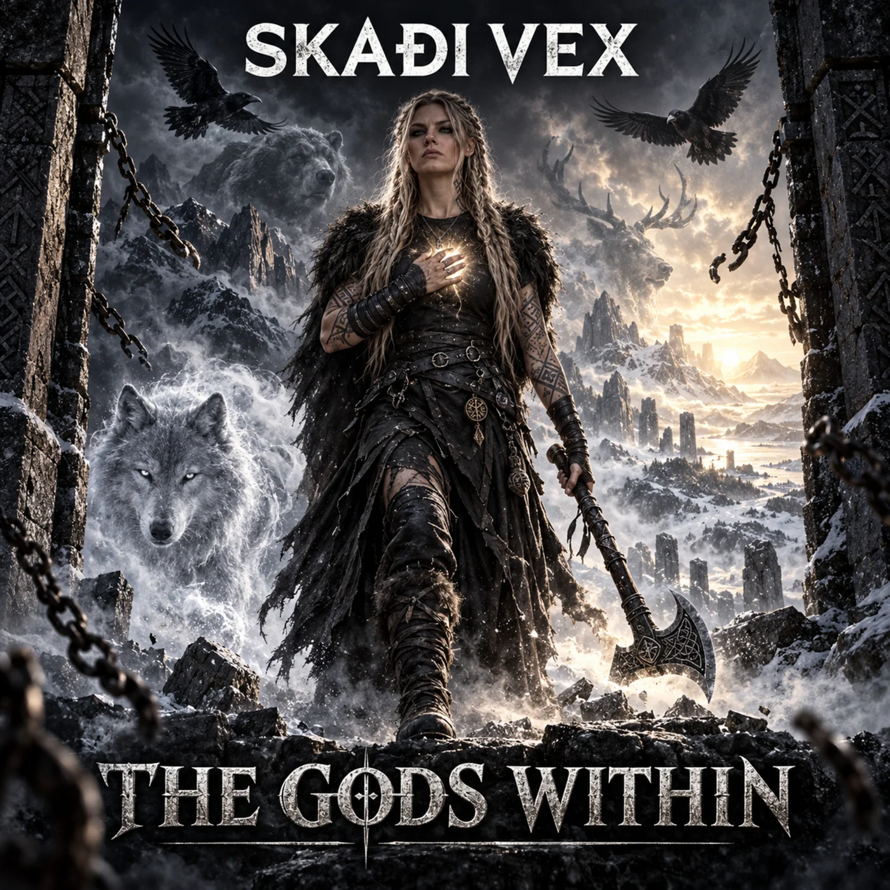

II / THE AWAKENINGTHE SECOND ALBUM · OUT NOW
THE GODS
WITHIN
The wolf. The raven. The bear. The power was never theirs to give.
A new chapter of defiance, inheritance and fire. From the hall of the Allfather to the temple reclaimed, SKAÐI walks forward on her own terms.
OUT NOW · 27 SEPTEMBER 2026